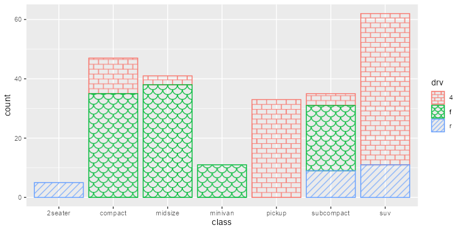
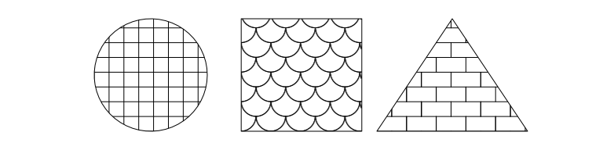

Overview
fillpattern streamlines the process of adding distinctive yet unobtrusive geometric patterns in place of solid grob/geom fills. The resultant figures look just as professional when viewed by colorblind readers or when printed in black and white.
Compared to the similar ggpattern package, fillpattern:
- Has no dependencies beyond base R and
ggplot2. - Works with
ggplot2::geom_*functions. - Focuses on simple geometric patterns.
Installation
# Install the latest stable version from CRAN:
install.packages("fillpattern")
# Or the development version from GitHub:
install.packages("pak")
pak::pak("cmmr/fillpattern")Usage
Simply add scale_fill_pattern() to your ggplot.
library(ggplot2)
library(fillpattern)
ggplot(mpg, aes(x = class, color = drv, fill = drv)) +
geom_bar() +
scale_fill_pattern()
Works with geom_bar(), geom_boxplot(), geom_violin(), and other geom_* functions that accept a fill aesthetic.
grid grobs
Set fill = fill_pattern() in the grob’s graphical parameters.
library(grid)
library(fillpattern)
grid.newpage()
grid.circle( gp = gpar(fill = fill_pattern("grid")), x = 1/4, r = 3/8)
grid.rect( gp = gpar(fill = fill_pattern("fish")), width = 1/5, height = 3/4)
grid.polygon(gp = gpar(fill = fill_pattern("brick")), x = c(6,7,5)/8, y = c(7,1,1)/8)
Modified Patterns
For each basic pattern, you can specify the foreground color, background color, line width/style, tile size/rotation, and more through arguments to fill_pattern() and scale_fill_pattern().
Most modifications can be specified as part of the pattern name (shown below).

For additional details, see the fill_pattern() and scale_fill_pattern() reference pages.